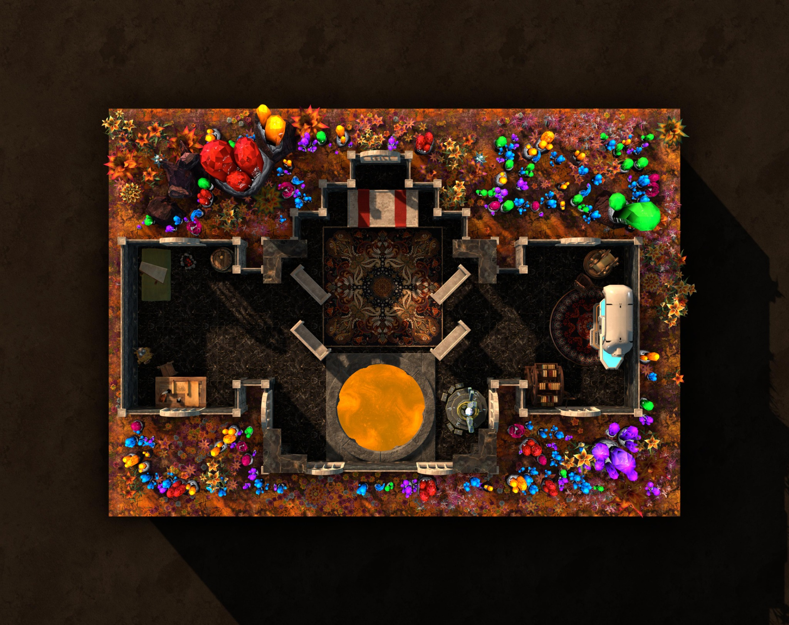

Estado atual
O grupo está estabelecido no templo. A biblioteca abriga a Fabricadora; o acampamento dos moradores anteriores foi encontrado à esquerda da chegada. Depois da expedição, o local também recebeu a Modeladora, Gary, cinco auxiliares e o vaso de TK.
Luz e tempo
O ambiente apresenta um ciclo de claridade: do azul pálido ao roxo mais escuro, com nuvens esparsas, sem estrelas ou sol visível. A iluminação parece ambiente, sem uma fonte única reconhecível. A duração do ciclo e sua relação com o tempo na Gorja não foram medidas.
Arredores
Portas, janelas e outras aberturas dão acesso ao exterior, com plantas, fungos e minerais de cores vivas; a paisagem se estende além do que foi observado. Ninyan e Tchi-Dril saíram para explorar enquanto o trio visitava a oficina.
Entre expedições
Durante cerca de dois dias, os personagens aprenderam a operar a Fabricadora por tentativa e erro. Há espaço para atividades e melhorias; recuperar uma máquina não significa que todas essas obras já foram construídas.
